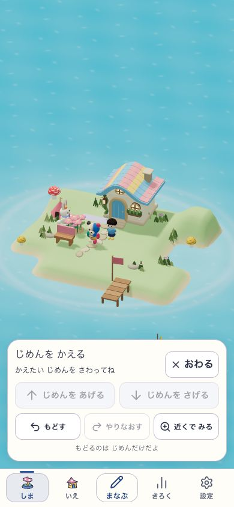
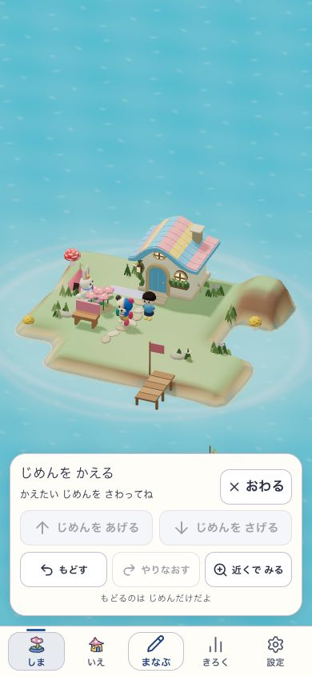
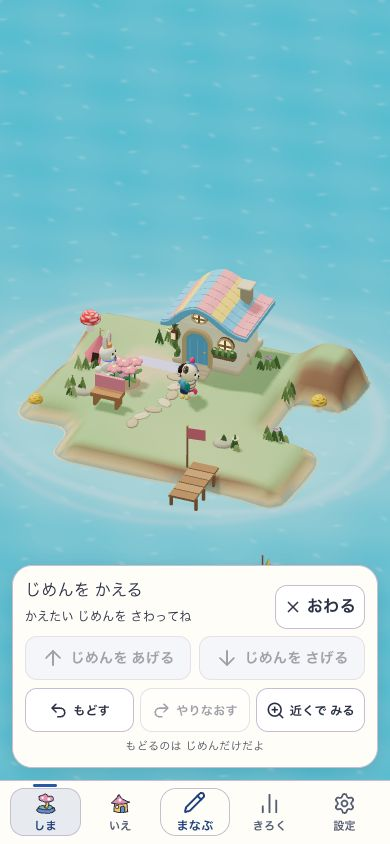
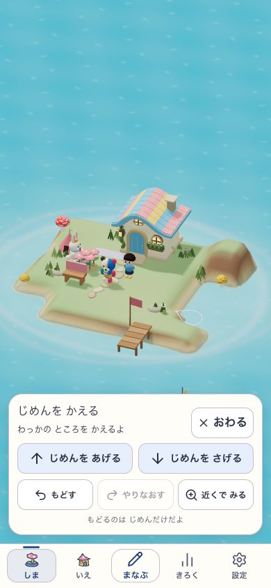

チャッピーと3往復し、通常ゲームで仮説を試した。失敗した庭案は棄却し、地形と暮らしを一体で作る方針へ進む。
実験・検証・未確認範囲 ／ チャッピーとの相談

通常操作で掘った地形。同じ保存・所有物・画角を比較の基準にする。

高さと斜面で草・土・砂を分ける。丘は読めるが、これだけで場所は成立しない。

配置には追従するが薄い道に見える。暮らしの差が足りず、不採用。
初期島で一段掘り始められる地点。家と桟橋の足元を守ったまま、周囲の地形へなめらかにつなぐ物理候補で改善。
固定支持7,056サンプルの高さ不変、人物足場の保護、通常ゲームの掘削・戻す・やり直す・保存再読込を確認。
人物なしの初期fixtureと限定した実操作。全配置・橋・拡張・実機の保証ではない。右は桟橋横を掘れた候補の実画面。

平地でも入り江でも同じ飾りが出る案は不合格。一角は方式の検証。全島の美術、成長・拡張、子どもの理解と再訪の目標を小さくしない。
比較画像は同じ390×844・同じ地形とカメラ。住人は自然に動く。新候補の完成美術・配布・実機・子どもの体験は未確認。